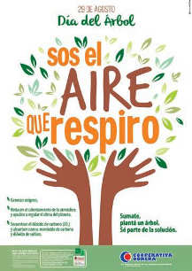
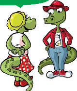

The verb
Indicate what the highlighted verbs express.

Join in, plant a tree.
Be part of the solution.
You are asked to plant a tree.
They explain to you how to plant trees.
You are ordered to plant a tree.
They ask you how to plant trees.
In conclusion: when a speaker............
Or read.................... something or other, use verbs in the imperative mood.
